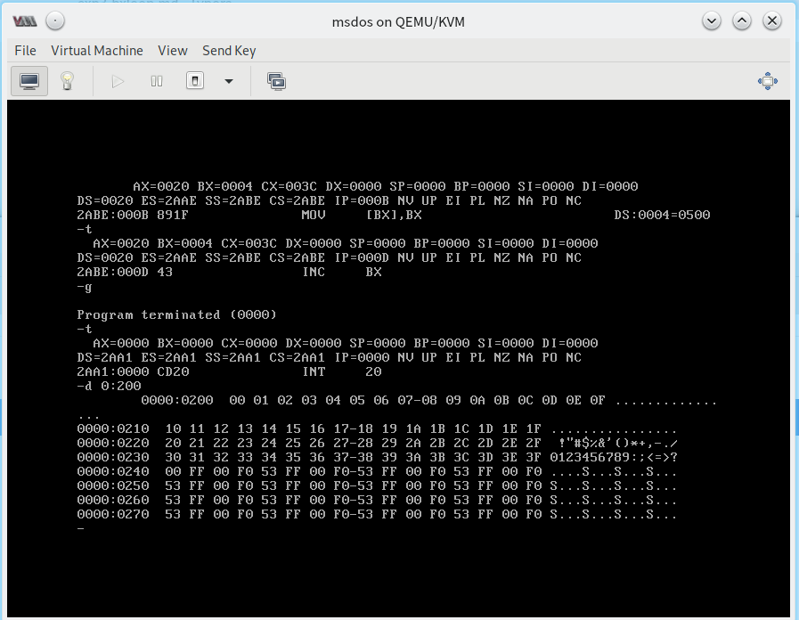

实验三：[BX] 和 LOOP 指令的使用
实验目的
熟悉 [BX] 和 LOOP 指令的使用，区分 BX 和 [BX] 在 MASM 和 DEBUG 中的区别并加以运用。
实验题目
编程，向内存 0:200~0:23F 依次传送数据 0~63 (3FH)，这个程序包括返回程序在内只能使用 9 条指令。
代码解释：传输
mov ax,4c00h之前的指令至0:200。补全下列指令，编译、调试、跟踪。assume cs:code code segment mov ax,__________ mov ds,ax mov ax,0020h mov es,ax mov bx,0 mov cx,___________ s: mov al,[bx] mov es:[bx],al inc bx loop s mov ax,4c00h int 21h code ends end
我的想法
题目一，写好的 源代码
 传输数据之后
题目二，已补全并通过调试的 源代码
以上代码均在我本机测试通过。
实验反思
请在下方评论区尝试分析此次实验涉及的代码，并写出你的观点或看法并与大家交流。